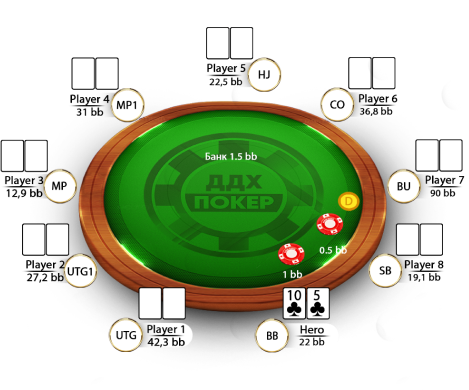

Словарь:
АБИ (Average Buy-In) - Среднее суммарное значение
взносов в ваши сыгранные турниры.
АФС (average field size) - Среднее количество
человек в сыгранных вами турнирах.
АУТ - та карта, которая поможет нам собрать
комбинацию.
Ад он (Ad on) - последняя возможность докупиться
(обычно от 1,5х до 3х от стартового стека).
Ай Си М (ICM)(Independent Chip Model) - Независимая
модель фишек, в которой проигранные фишки намного дороже
выигранных. Она придает фишкам реальную ценность в зависимости
от двух параметров: размеров стеков и призовых выплат.
Банкролл - общее количество денег игрока,
выделенных им для игры в покер.
Баунти - это термин в специальных покерных турнирах
(баунти-турниры), обозначающий сумму денег, которую получает
один игрок за выбивание другого.
Борд - место на игровом столе, куда выкладываются в
открытом виде общие карты игроков, а также сами эти карты.
Бет (bet) - в переводе означает «ставка». Термин
означает в торгах первую ставку.
Бабл (Bubble) - период турнирного события, когда до
достижения призовых мест остается дождаться вылета одного или
нескольких соперников.
Блайнд (Blind) - это обязательный взнос, который
совершается вслепую до раздачи карт.
Баррель - принято называть последовательные
ставки-продолжение, которые игрок делает на постфлопе после
рейза на префлопе.
Велью (value) - это общее обозначение действий,
приносящих прибыль на дистанции, или же рук, которые приносят
эту прибыль. Например, VALUE BET (вэльюбтет, ставка на вэлью)
или VALUE HAND (вэлью-рука).
ГСЧ - это аббревиатура от понятия Генератор
Случайных Чисел. Генератор создает цепочки случайных цифр,
которые определяют порядок тасования и раздачи карт.
Гат шот (Gutshot) - разновидность Стрит-Дро, для
достройки которого не хватает одной карты, которая должна лечь в
середину последовательности.
Дро (Draw) - рука на флопе или терне, не имеющая
готовую комбинацию, но предоставляющая вероятность её составить
на следующих улицах. Для построения руки может не хватать одной
или двух карт.
Дисперсия - это показатель отклонения случайного
параметра в какую-либо сторону от предполагаемого
математического ожидания.
Доска - место на игровом столе, куда выкладываются
в открытом виде общие карты игроков, а также сами эти карты.
Килополе - килополями в покере называют турниры с
количеством участников >1000.
Контбет (continuation bet) - это «ставка в
продолжение» на стадии флопа, совершаемая покеристом, который
рейзил на префлопе.
Кол - уравнение ставки опоонента.
Кеш игра (Cash) - это формат покера, при котором
можно вступить в игру с любым стеком, а начать игру и покинуть
стол – после любой раздачи. При этом каждая фишка.
Мультипот (Multipot) - банк, за который сражаются
более двух игроков.
Натс(Nuts) - наилучшая возможная текущая комбинация
на флопе или тёрне. На ривере натс - это непобедимая комбинация.
Префлоп - самая первая улица торгов, когда нет
общих карт на столе, но у вас уже свои две карманные.
Пас (фолд) - сбрасывание карт.
Ривер(river) - последняя улица торгов.
Рейз (Raise) - действие игрока, повышающее ставку,
сделанную до него. Действие доступно если до игрока никто его не
делал. Этим слабо агрессивным действием игрок обычно показывает
уверенность в своих картах, либо пытается блефовать.
Ребай (re-buy) - докупка фишек в турнире в период
поздней регистрации.
Сайзинг - это выбор размера ставки, относительно
величины блайндов или банка.
Стек(stack) - это все фишки, которые имеются у
игрока, находящегося за игровым столом, которые доступны ему для
того, чтобы совершать ставки.
Тёрн(turn) - 3-я улица торгов (когда на общий борд
ложится 4-ая карта)
Улица - один из раундов торгов.
Флоп(flop) - 2-я улица торгов (когда на общий борд
появляются 3 карты)
Хоум Геймс (Home Games) - Домашние игры в рамках
одного из румов, позволяющие в закрытой комнате создавать и
проводить любые турниры.
3бет - 3-е повышение ставок (не путать с размером
повышения в 3 раза). То есть если мы уравниваем большой блайнд -
это 1 бет, если кто-то рейзит - это 2 бет, а если после него ещё
кто-то рейзит вот это уже 3 бет! И размеры рейзов тут не причём!
4бет - 4-е повышение ставок (не путать с размером
повышения в 4 раза). То есть если мы уравниваем большой блайнд -
это 1 бет, если кто-то рейзит - это 2 бет, если после него ещё
кто-то рейзит это 3 бет, а вот если ещё кто-то рейзит вот это
уже 4 бет! И размеры рейзов тут не причём!
Трипс - это комбинация в покере из трех карт,
составленная из одной карманной карт и двух карт борда.(666JQ)
Сет(three of a kind) - это комбинация в покере из
трех карт, составленная из двух карманных карт и одной карты
борда.(666JQ)
Стрит - последовательность из 5 карт друг за другом
(8 9 Т J Q ). Может состоять с двух карманных карт и 3-х с
борда, либо 1-ой карманной и 4-х с борда, либо всех общих карт с
борда.
Флеш - 5 карт одной матсти (А J 9 7 2 в бубях)
Может состоять с двух карманных карт и 3-х с борда, либо 1-ой
карманной и 4-х с борда, либо всех общих карт с борда.
Фул Хаус (Full House) - комбинация в покере,
состоящая из трех карт одного достоинства и двух карт другого
достоинства. Может состоять с двух карманных карт и 3-х с борда,
либо 1-ой карманной и 4-х с борда, либо всех общих карт с борда.
Каре(Four of a kind) - комбинация в покере,
состоящая из четырех карт одинакового достоинства и одной
произвольной карты, называемой кикером. Может состоять с двух
карманных карт и 3-х с борда, либо 1-ой карманной и 4-х с борда,
либо всех общих карт с борда.
Стрит Флеш(straight flush) - представляет собой
комбинацию, состоящую из пяти карт одной масти, идущих подряд от
самой низкой к более высокой. Может состоять с двух карманных
карт и 3-х с борда, либо 1-ой карманной и 4-х с борда, либо всех
общих карт с борда.
Роял Флеш(royal flush) - частный случай
Стрит-флеша, который состоит из карт одной масти от Десятки до
Туза.(Самая сильная комбинация в покере). Может состоять с двух
карманных карт и 3-х с борда, либо 1-ой карманной и 4-х с борда,
либо всех общих карт с борда.
Позиции на 9 mах столе:
УТГ (UTG) - первые 2-3 позиции за столом
МП (MP) - 3-5 позиции за столом.
Хай Джек (HJ) - 5 позиция на префлопе.
Кат оф (CO) - 6 позиция на префлопе.
Баттон (BU) - 7 позиция на префлопе.
МАлый блайнд (SB) - предпоследняя позиция на префлопе.
Большой блайнд (BB) - последняя позиция на префлопе
